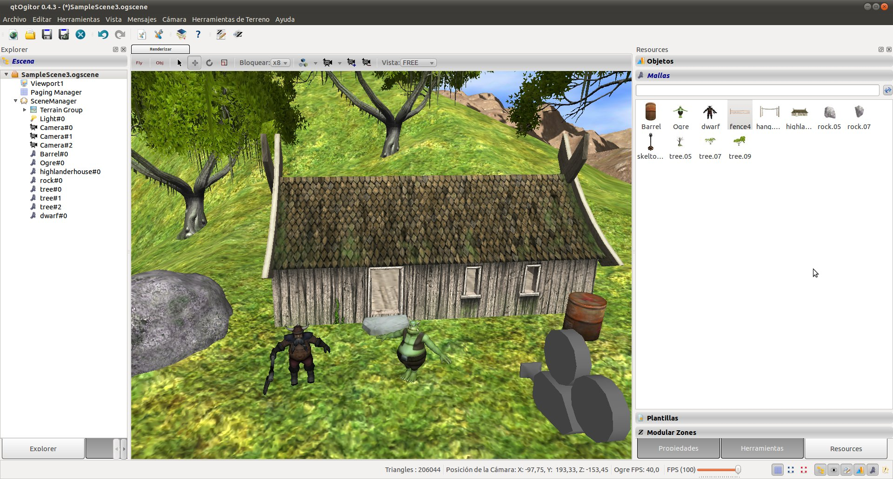
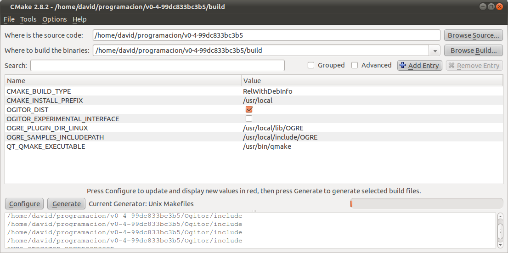
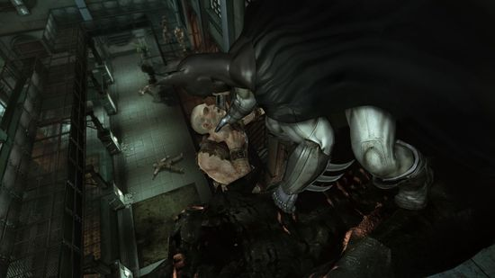
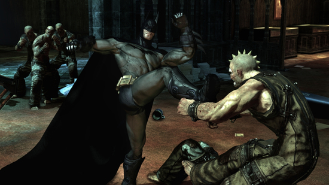
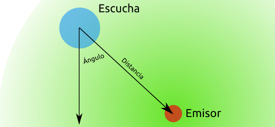
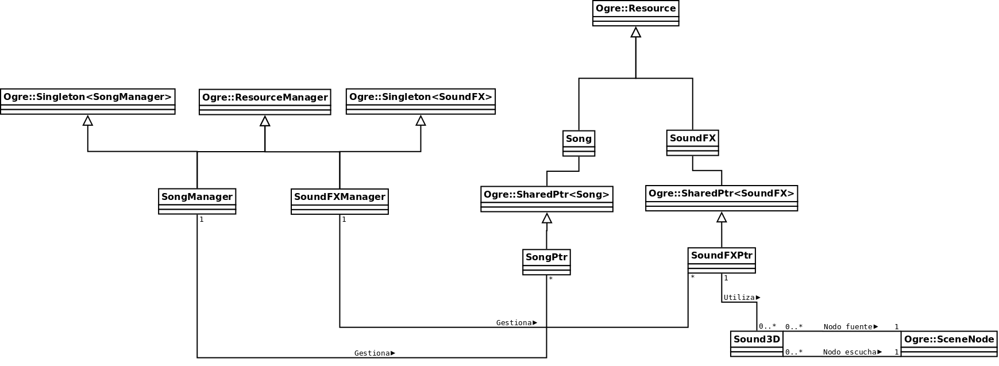

Jan 10, 2011 · Comments
Games development
Para poder trabajar en una wiki sobre el engine de renderizado Ogre3D he tenido que aprender a utilizar la biblioteca en algún sitio. Estos conocimientos también son indispensables para el desarrollo de Sion Tower. Lo cierto es que debería poner un disclaimer como una casa advirtiendo mi escasa experiencia porque aún estoy aprendiendo. En cualquier caso, en este artículo enumero las fuentes que he utilizado acompañadas de las razones por las que me han sido útiles. ¿Quién sabe? Puede que alguien conozca una fuente nueva.
Por supuesto, todo el contenido (texto, diagramas, ejemplos) de IberOgre es original y libre, no está copiado de ningún sitio. No obstante, es lógico que haya aprendido de otras publicaciones. ¿Cómo si no?
Wiki oficial de Ogre3D
La fuente más evidente de todas, su amplísimo catálogo de artículos, tutoriales y referencias le otorgan un valor indiscutible. Lógicamente, es la web que más consulto para escribir IberOgre y desarrollar Sion Tower. No sólo se puede aprender a manejar el engine de renderizado sino que entre sus páginas se encuentran las claves para componer un flujo de trabajo decente.
No obstante, hay que reconocer que no es oro todo lo que reluce, la wiki tiene ciertos puntos negros que no me acaban de agradar. Para empezar, se le da demasiado soporte al desarrollo en Windows con IDEs como Microsoft Visual Studio. Se echa de menos soporte para herramientas y Sistemas Operativos libres, cosa que trato de suplir en IberOgre. El hecho de querer entrar en materia hace que explique las bases de Ogre más tarde de lo que debiera. Siempre se hereda de BaseApplication, clase encargada de inicializar las bibliotecas pero no se nos explica su funcionamiento hasta el sexto tutorial.
A continuación, enumero las zonas de la wiki que me han sido de mayor utilidad:
Por supuesto, no se me podían olvidar ni el foro (con sabios usuarios dispuestos a ayudar) ni la documentación online.
Pro OGRE 3D Programming
Pro OGRE 3D Programming era el único libro sobre Ogre hasta hace muy poco. No es precisamente barato (~$45) pero nos ayuda a comprender el funcionamiento del motor bastante bien. Cubre prácticamente la totalidad de los apartados con nivel de detalle aceptable. El mayor problema con el que me he topado a la hora de trabajar con Ogre es el gran número de formas de abordar un mismo problema. No sabía qué ventajas e inconvenientes conllevaba cada alternativa y este libro me ha ayudado a aclararme las ideas.
Diría que es un buen complemento a la ligereza de los tutoriales de la wiki oficial. No obstante, la escasez de ejemplos es importante. No hay mejor manera de entender conceptos complejos que con una sesión práctica. No sólo escasean los ejemplos sino que éstos son de juguete. A pesar de todo sigo diciendo que es una buena referencia complementaria.
OGRE 3D 1.7 Beginner’s Guide
Recientemente se ha puesto a la venta el segundo libro de nuestro motor favorito, OGRE 3D 1.7 Beginner’s Guide. Es una obra más económica (35€) que se aproxima al estilo de trabajo de la wiki oficial (BaseApplication). Su principal ventaja es la gran cantidad de ejemplos que incluye, siempre muy visuales. Tiene un flujo de trabajo muy atractivo: enunciado del problema, exposición de la técnica con un caso práctico, muestra de resultados y explicación sobre lo que se acaba de hacer.
Sufre del problema de dejar el fundamento de Ogre para los últimos compases pero es una buena guía de iniciación para la siempre dolorosa toma de contacto. Ayuda a ver las cosas con más cercanía y puede proporcionar la confianza necesaria para seguir.
Game Engine Architecture
Game Engine Architecture es un libro de los que hacen daño al transportarlo en la mochila pero me tiene completamente fascinado. Es un viaje por todos los subsistemas que componen un motor para un videojuego más o menos genérico. Abarca desde el más bajo de los niveles hasta el más alto y considera todas las plataformas (PC y consolas). Temas como la gestión de memoria, el subsistema de colisiones, el renderizado o la animación tienen apartados dedicados. Su elevado precio (~$60) hace que nos lo pensemos dos veces pero merece la pena.
Es tan complejo como extenso y no lo recomiendo para alguien que esté empezando. La ventaja es que no se anda con memeces y directamente pone ejemplos de código perteneciente a videojuegos triple A como Quake o Uncharted. Admito que no ofrece demasiados detalles dentro de cada apartado pero es suficiente para comprender las distintas técnicas a la hora de resolver un problema.
Vuelta a trabajar
Aprovecho para comentar que he abierto una cuenta de Delicious para compartir principalmente enlaces sobre desarrollo de videojuegos que vaya encontrando por la red.
Bueno, dejemos la charla para volver al desarrollo de Sion Tower y la composición de IberOgre. Espero que si buscabas fuentes de información sobre Ogre o el desarrollo de videojuegos 3D en general hayas encontrado lo deseado.
Jan 5, 2011 · Comments
Games development
Como es lógico, los niveles de Sion Tower se almacenarán en ficheros y deberán contener información para poder desplegar el escenario, oleadas de enemigos, música etc. Escribir a mano un un fichero tan complejo es peor que una tortura propia de mafiosos. Por tanto, lo ideal sería disponer de un editor libre y multiplataforma con el que crear los niveles. El sistema de Sion Tower tomará la responsabilidad parsear los ficheros del editor y cargar los niveles. Para un menor sufrimiento, es indispensable que el editor sea compatible con un formato abierto y conocido por la comunidad. Más detalles a continuación.
DotScene es un formato xml diseñado para la exportación e importación de escenas 3D en proyectos Ogre, podéis encontrar el correspondiente DTD aquí. Es ampliamente utilizado por la comunidad de Ogre en ficheros con extensión .scene y contempla todo lo que una escena puede mostrar: mayas, luces, geometría básica y un larguísimo etcétera.
El procesamiento de un fichero con tantos elementos podría ser complejo. No obstante, existen parsers ya desarrollados como DotSceneLoader. En cualquier caso, creo que acabaré implementando uno propio que utilice internamente la biblioteca pugixml. Ofrezco dos razones principales: me gustaría personalizar mi parser y pugixml es tremendamente eficiente en tiempo/espacio (mirad este impresionante benchmark).

Ogitor, la respuesta
Ogitor es un editor de escenarios libre y multiplataforma. Está desarrollado con QT y, por supuesto, Ogre. Lo mejor de todo es que soporta el formato DotScene así que no tendré que preocuparme por toquetear inmensos ficheros XML. Es compatible tanto con Windows como con Linux aunque en éste último hay que compilar. Aún se encuentra en la versión 0.4 pero tiene un desarrollo activo y una comunidad dispuesta a ayudar.
Instalación de Ogitor en Linux
Ogitor viene perfectamente empaquetado para Windows pero en Linux estamos obligados a compilarlo desde las fuentes. Aunque… ¿desde cuándo ha sido eso un problema para tan avezados usuarios? En las siguientes líneas les detallo el proceso, no exento de pequeños detalles delicados.
Dependencias
- Ogre 1.7: creo que era bastante evidente. Si no lo has hecho, puedes acudir a IberOgre por su flamante artículo al respecto. Es importante que instales los ejemplos.
CMake: para configurar y compilar Ogitor necesitamos la herramienta CMake. A tal efecto, instala los paquetes cmake y el frontend cmake-gui:
sudo apt-get install cmake cmake-gui
QT4: para compilar Ogitor es imprescindible la versión de desarrollo de la cuarta edición de QT. El paquete necesario se llama libqt4-dev:
sudo apt-get install libqt4-dev
Boost RegEx: Ogitor hace uso de la biblioteca de expresiones regulares de Boost así que toca instalarla:
sudo apt-get install libboost-regex-dev

Compilación e Instalación
Le toca el turno al editor que llevamos queriendo instalar hace un buen rato:
El ejecutable de Ogitor se habrá creado en:
[compilación-ogitor]/RunPath/bin/qtOgitor
Nos vemos en el siguiente episodio
En este artículo hemos hablado sobre el ampliamente aceptado formato DotScene y hemos desgranado la instalación de Ogitor. Es probable que haya un próximo episodio en el que relate mi experiencia con Ogitor y documente la creación de niveles para Sion Tower. Ya saben, ante cualquier problema que encuentren pueden dejar un comentario.
Jan 3, 2011 · Comments
Hobbies
¿Otro comentario de un juego de hace año y medio? Caballeros, qué quieren que les diga, me tomo las cosas con calma. Mientras la masa se deja los cuartos en el Call of Duty de turno yo estaba a dos bandas entre Fifa 11 con su delicioso vestíbulo online 2vs2 y Batman Arkham Asylum. Rocksteady le ha dado una patada en la boca a todos aquellos que decían que los juegos de superhéroes no podían ser buenos. La ausencia de presión por un lanzamiento coincidente con el estreno de “El Caballero Oscuro” le vino de maravilla. Lo que sigue es mi experiencia en la prisión psiquiátrica de Arkham.
El Joker es un troll de cuidado
Arkham Asylum se inspira en el cómic de mismo nombre y nos cuenta cómo Batman consigue atrapar a Joker y llevarlo hasta la prisión psiquiátrica de Arkham. El Joker, como buen troll que es, tenía preparada una sorpresita. Finalmente consigue tomar la prisión al completo sometiendo al personal de seguridad entre risas diabólicas. Como cabía esperar, nuestra misión consiste en recuperar el control de la isla y capturar al Joker.
No cuento más ante riesgo de spoilers. Si bien este tipo de títulos no suelen contar con argumentos de interés, en esta ocasión la historia adquiere más importancia. En absoluto es la quintaesencia de los guiones pero me ha parecido bastante interesante descubrir el entramado.

Camarero, agite bien el cóctel
Podríamos decir que Batman Arkham Asylum es un juego de acción en tercera persona pero nos quedaríamos cortos. Lo que cautivó a la crítica en su momento y lo que me ha mantenido pegado al mando ha sido su magnífica combinación de géneros. En primer lugar destacaría el sigilo. No basta con saltar en medio de una reunión de presos ciclados armados hasta los dientes para liarnos a mamporros porque recibiremos una buena dosis de plomo. Estamos obligados a estudiar el entorno y acabar con los enemigos uno a uno, tal y como trabaja Batman. El diseño de los emplazamientos es lo suficientemente rico como para proporcionar distintas formas de abordar una solución y eso siempre se agradece.
El sistema de golpes, esquivas y contraataques es sencillo pero efectivo. Los enemigos desarmados no son demasiado complicados pero a veces no queda otra que medir cuidadosamente los tiempos. A pesar de todo, he echado de menos un combate algo más profundo y variado en enemigos. Por último tenemos la exploración y la recolección de objetos. La isla de Arkham tiene cientos de recovecos con secretos por descubrir, lo cual aumenta la rejugabilidad.
Los gadgets típicos del hombre murciélago estarán presentes y nos ayudarán tanto en el combato como en el avance por el escenario. Atención porque a pesar de lo que ya he mencionado me dejo mecánicas por comentar.

Unreal Engine 3, un motor que da la talla
Muchos se quejan del reaprovechamiento del motor Unreal Engine 3 desarrollado por Epic y lanzado en 2006. Tendrá sus añitos pero hace un papel excepcional a la hora de plagar de detalles el tétrico entorno de Batman Arkham Asylum. Iluminación, reflejos, anatomía o escenarios son algunos de los campos en los que destaca el apartado técnico. Sobre todo me ha llamado la atención la casi total ausencia de cargas entre zonas. Simplemente las transacciones de disco se hacen en paralelo, por streamming. Si tengo que quejarme de algo lo haría de las sombras, algo pixeladas. Precisamente, el Unreal Engine se renueva dentro de poco para ponerse al día en la carrera de los gráficos.
De paseo por Arkham Asylum
Es cierto que el Unreal Engine hace mucho pero el trabajo de los diseñadores de Rocksteady ha sido descomunal. El universo Batman está recreado a la perfección incluyendo entornos y personajes. No sólo me refiero a los modelos y texturas sino al sonido. El Joker siempre se guarda un chascarrillo y los enemigos finales no dejan pasar la ocasión de lanzarnos mensajes en función de nuestra actuación en el combate.
Nos veremos inmersos en la locura de la penitenciaría psiquiátrica de la mano de presos dementes y enemigos finales como el Espantapájaros, Hiedra venenosa, Bane o Harley Quinn. La apariencia de Batman va cambiando a medida que avanzamos con heridas y estropicios en el traje. Hablo en serio, la ambientación es absolutamente magistral, ¡si incluso el doblaje al castellano es el mejor que recuerdo en mucho tiempo!
Resumiendo
Es complicado describir la experiencia de Arkham Asylum en un simple artículo y ya me estoy extendiendo demasiado, deben jugarlo. Quizás no sea la magnánima obra maestra que muchos medios proclamaban pero sin duda es el mejor título de superhéroes al que he tenido el placer de jugar. Lo mejor de todo es que la segunda parte, Arkham City, ya viene de camino. En fin, les dejo que he desprecintado hace nada Castlevania Lords of Shadows, ¡producto patrio!
Dec 31, 2010 · Comments
Hobbies
Siempre me han gustado las historias de investigación y acción en las que lo importante no es si el personaje descubre el misterio, sino cómo lo consigue. Creo que la nueva serie británica Sherlock entra dentro de la categoría. Se estrenó en UK el pasado verano con una crítica excelente. Aunque sus episodios constasen de 90 minutos de metraje, esta primera temporada sólo cuenta con 3 de ellos por lo que en unos días ya la había finiquitado.
Lo más reseñable es que las aventuras de Sherlock Holmes creadas por Arthun Conan Doyle ambientadas en el S. XIX. se trasladan a la actualidad. El prodigioso pero socialmente inadaptado detective utiliza Internet o el teléfono móvil entre otras tecnologías modernas. Los personajes se mantienen con licencias más o menos abusivas aunque en un contexto completamente distinto. ¿Le sienta bien el cambio? Diría que sí, al menos es algo distinto a lo habitual.
En absoluto es una serie profunda que induzca a una reflexión posterior. A cambio, nos ofrece diversión y obliga a prestar un alto grado de atención para seguir las vertiginosas deducciones de Holmes. “A Study in Pink”, el primer episodio roza un nivel estupendo. ¿Quiere decir eso que los demás pierden? El par de capítulos restantes no me han agradado como el primero, quizás por la temática y pequeñas bajadas de ritmo. Se nota que mantener una dinámica acelerada en episodios de hora y media es una tarea titánica.
No quiero extenderme más, para terminar diré que si te gusta Sherlock Holmes y las producciones de misterio deberías darle una oportunidad. No sé vosotros, pero yo estoy algo cansado de los protagonistas egocéntricos y sociópatas que tanto se han puesto de moda con House. Se queda en un “bien” hasta que llegue la segunda temporada en otoño del año que viene y se resuelva el cliffhanger final.
Por cierto, feliz año nuevo.
Dec 30, 2010 · Comments
Games development
Como todo buen hijo de vecino, Sion Tower necesitará reproducir efectos de sonido y música de fondo, de otro modo al jugador se le caerían dos lagrimones y lo cerraría para siempre. Ogre es un motor de renderizado y no incorpora elementos como un subsistema de audio, por tanto, debía buscarlo en otro lugar. Como he comentado anteriormente, Ogre cuenta con un sistema de gestión de recursos muy potente y ampliable. Sobra decir que mi audio debería integrarse completamente con dicho sistema. A continuación, relato mi pequeña odisea para conseguir lo deseado.
Elegir una biblioteca de audio
Debía elegir una biblioteca para gestionar el audio, al menos a bajo nivel. Las opciones más evidentes eran SDL Mixer y OpenAL. Indagando un poco, encontré una biblioteca auxiliar llamada OgreOggSound que integraba OpenAL con Ogre incorporando audio 3D. Los ojos se me abrieron como platos pero me llevé una decepción cuando vi que la documentación brillaba por su ausencia. Además, prefería aprender la forma de extender la gestión de recursos de Ogre y cacharrear un poco con el audio.
OpenAL es al sonido lo que OpenGL al 3D en el ámbito open source. Es compatible con decenas de plataformas y está enfocada al desarrollo de videojuegos en 3D. Títulos triple A como Doom 3, Battlefield 2 o Jedi Knight lo han utilizado. Como era de esperar, es un sistema muy grande y complejo.
SDL Mixer es una biblioteca pequeña y sencilla que me permite regular aspectos como volumen y ángulo para provocar un efecto pseudo 3D. Ya había trabajado con ella en Air Force Pilot y en Granny’s Bloodbath de forma satisfactoria. Además, es compatible con las plataformas que necesito. En fin, es más limitada pero me basta para mis necesidades.
Integración con la gestión de recursos de Ogre
Los recursos que queramos integrar con Ogre deben implementar la interfaz Resource. Ogre utiliza el ResourceGroupManager para gestionar los recursos a nivel global pero tiene un ResourceManager para cada tipo de recurso. Esto quiere decir que tenemos que implementar clases que hereden de ResourceManager. Los gestores de recursos no manejan objetos Resource directamente, sino que utilizan punteros inteligentes, SharedPtr muy similares a los shared_ptr de Boost. Esto les permite mantener una sola instancia de cada recurso compartida por varias entidades.
SDL Mixer trata de forma distinta la música y los efectos de sonido por lo que planteé dos nuevos recursos: Musica y Sonido. A continuación tenéis la lista de clases resultante aunque al final de este artículo se expone un diagrama UML completo.
- SoundFX y SoundFXPtr
- Song y SongPtr
- SoundFXManager
- SongManager
La forma de trabajar con los nuevos recursos es semejante al estilo de Ogre. Queda completamente integrado:
// Al arrancar la aplicación
SoundFXManager* soundFXManager = new SoundFXManager();
// Durante la carga de algún estado
// Se le indica el nombre del recurso, ResourceGroupManager
// te proporciona la ruta completa.
SoundFXPtr sound = SoundFXManager::getSingleton().load("disparo.wav");
// Durante el game loop
sound->play();
// Al cerrar la aplicación
delete soundFXManager;
Sencillo pero resultón sonido 3D
No todos los sonidos tienen porqué reproducirse con efecto 3D por lo que he modelado este pequeño sistema de forma independiente. La clase Sound3D tiene un SoundFXPtr y dos punteros a SceneNode. Uno de los nodos es el emisor y el otro el que escucha. El volumen varía en función de la distancia entre ambos nodos mientras que el ángulo entre ambos elementos produce un efecto estéreo. El siguiente diagrama lo ilustra:

SDL Mixer distribuye los efectos de sonido en los canales que se hayan reservado a tal efecto. Un mismo Sound3D puede estar reproduciéndose en canales distintos al mismo tiempo. La clase Sound3D controla internamente qué sonido tiene asociado cada canal. Se pone a disposición del desarrollador un método estático para actualizar todos los sonidos 3D en reproducción. Preferiblemente una vez por cada iteración del game loop deberíamos hacer:
// Actualizar todos los sonidos 3D en reproducción
Sound3D::update3DSound();
A vista de pájaro
El siguiente diagrama de clases simplificado ilustra a grandes rasgos los elementos de este sistema de audio y sus relaciones.

Para terminar
¡Vaya, me he extendido más de la cuenta! Han sido dos días intensos de trabajo entre aprender a extender la gestión de recursos de Ogre e implementación. En principio he desarrollado este sistema de sonido para Sion Tower pero en realidad es completamente independiente. Si estás desarrollando un juego y te interesa, acude a la forja y utiliza lo que desees (es GPL).
Seguiré informando de mis avances, muchas gracias por leer.